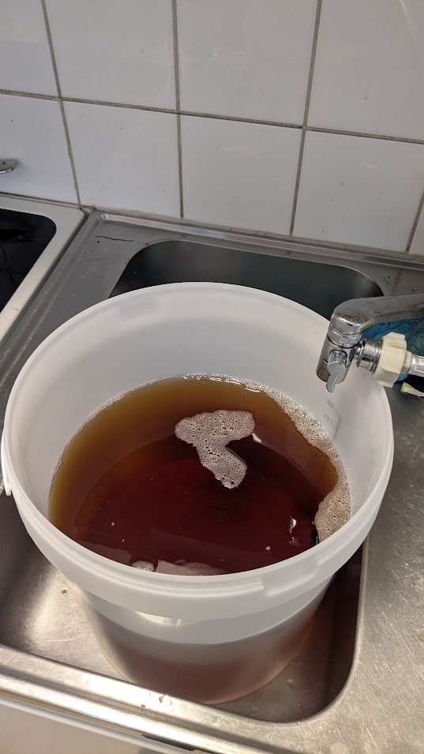
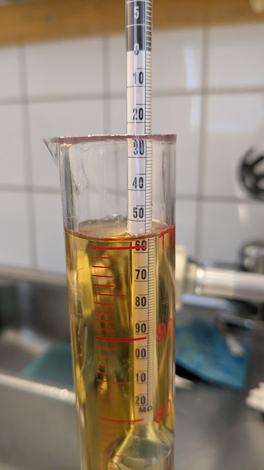
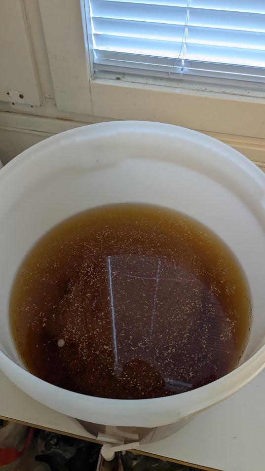

First cider
I was inspired by my friend Rasmus to try homebrewing for the first time. From him I got to borrow a bucket, hydrometer and bottlecap putter onner. From my other friend Ludvig I was able to borrow some sanitation chemicals.



Starting with buying 10 boxes of applejuice concentrate at 12kr a piece and Mangrove Jack's M02 Cider yeast for 35kr. I also bought some teabags of "gamla söder" tea. I mixed up the applejuice in the bucket and took a reading of 1.055 original gravity. Putting in the whole packet of yeast, as I didn't want to put in too little for my first time. I then added two cups of tea to add some tannins.